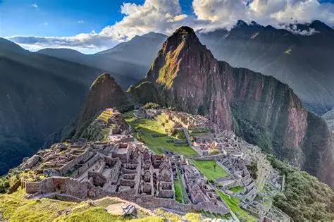
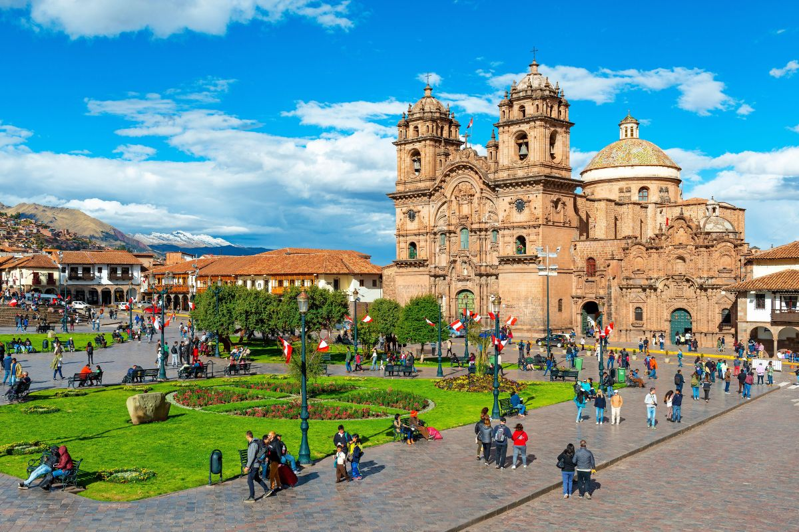
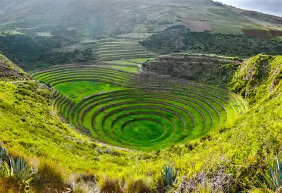
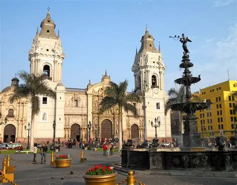
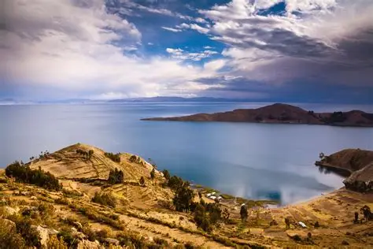
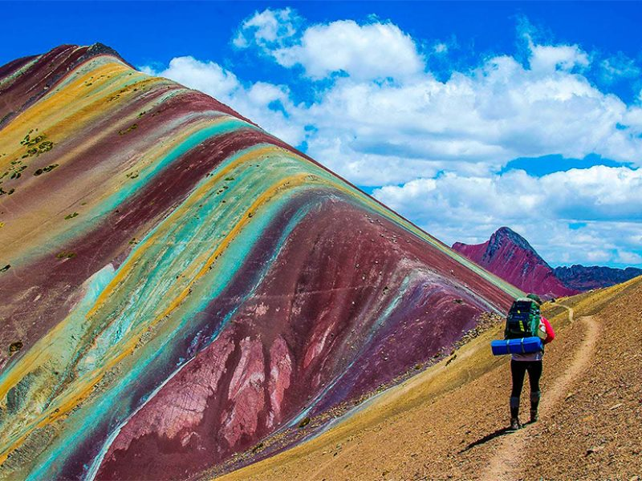
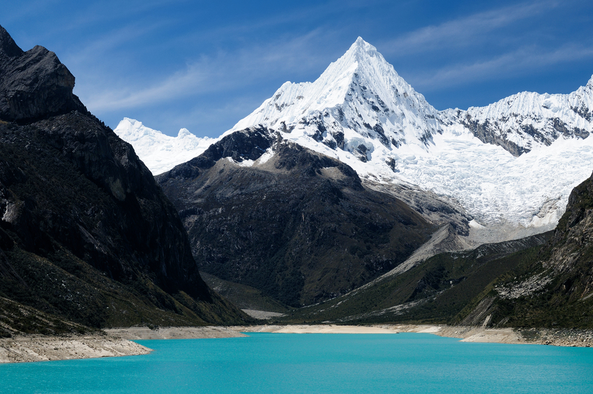

Atracciones turísticas

Machu Picchu
• La ciudad perdida de los incas, en lo alto de las montañas.
• Patrimonio Mundial de la UNESCO y una de las Siete Maravillas del Mundo Moderno.
• Se encuentra cerca de Cusco y se accede en tren o por el camino inca.
Cusco
• Antigua capital del Imperio Inca.
• Tiene calles de piedra, templos incas y construcciones coloniales.
• Punto de partida para Machu Picchu y el Valle Sagrado.
Valle Sagrado de los Incas
• Región con aldeas, terrazas agrícolas y sitios arqueológicos.
• Paisajes increíbles, con ríos y montañas.
• Era la principal área agrícola y religiosa de los incas Valle Sagrado de los Incas
Lima
• Capital del país.
• Centro histórico con arquitectura colonial.
• Famosa por la gastronomía, considerada una de las mejores del mundo.
Lago Titicaca
• El lago navegable más alto del mundo (3.812 m de altitud).
• Dividido entre Perú y Bolivia.
• Conocido por las islas flotantes de los Uros.
Montaña de los 7 Colores (Vinicunca)
• Montaña con franjas de colores naturales causadas por minerales.
• Se encuentra en los Andes, cerca de Cusco.
• Solo comenzó a atraer turistas después de 2015, cuando el hielo que la cubría se derritió.
Cordillera Blanca
• Cadena de montañas con picos nevados y lagos glaciares.
• Popular para senderismo y escalada.
Líneas de Nazca
• Son dibujos gigantes en el desierto, con formas de animales, plantas y figuras geométricas.
• Fueron hechos entre 500 a.C. y 500 d.C., solo pueden ser vistos desde lo alto.
• Nadie sabe con certeza su propósito: las teorías hablan de astronomía, rituales o mensajes a los dioses.